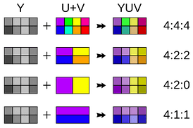

Основная статья: Цветовая субдискретизация
 При дискретизации Y', Cr, Cb компонент видеосигнала для сокращения скорости потока применяется так называемая цветовая субдискретизация. Если дискретизация каждого компонента производится с одинаковой частотой, такая схема будет называться 4:4:4. Однако она редко применяется на практике, из-за её избыточности. Для цифровых видеостандартов принято базовое соотношение 4:2:2, которое означает, что цветоразностные компоненты Cr, Cb передаются с горизонтальной чёткостью, в два раза меньшей чёткости яркостного сигнала, потому что человеческий глаз более чувствителен к изменению яркости, чем цвета. При этом частота дискретизации для яркостного сигнала Y' устанавливается равной 13,5 Мегагерц, что в два раза больше, чем для цветоразностных сигналов Cr и Cb — 6,75 Мегагерц.
В целях дальнейшего сокращения избыточности сигналов цветности применяются схемы с соотношением 4:2:0 и 4:1:1. В последнем случае горизонтальная чёткость цветоразностных сигналов снижается до четверти от полного разрешения сигнала яркости. Оба варианта 4:1:1 и 4:2:0 вдвое сокращают пропускную способность по сравнению с представлением без субдискретизации.
Для сигналов ТВЧ согласно части II Рекомендации ITU-R 709-3 установлены частоты дискретизации сигналов яркости 74,25 МГц и цветности 37,125 МГц.
© Филиппенок Кирилл Сергеевич, 2020 (сайт)